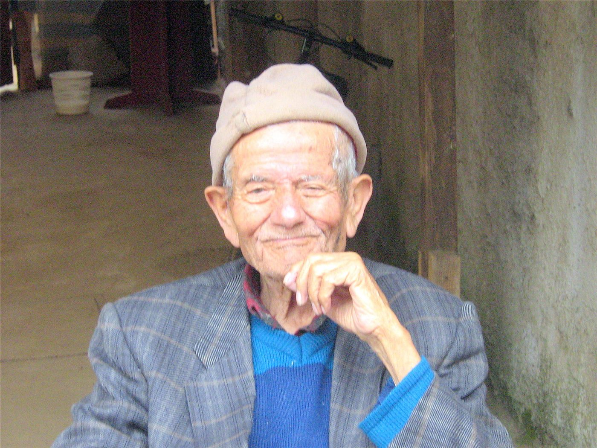

橋한국·정치
사진=Wikimedia Commons (자유 라이선스) · 기사 주제 관련 이미지
헤드라인바티칸에 울린 '6·15'… 李대통령 "평화의 불씨 아직 살아있다"
이재명 대통령이 유럽 순방 중 교황청에서 6·15 남북공동선언 26주년을 맞아 한반도 평화 의지를 밝혔다. "흡수통일을 추구하지 않는다"는 점을 거듭 분명히 하며, 출범 1년간의 긴장 완화 조치를 직접 거론했다.
방문연 기자 · 2026.06.15
이재명 대통령이 유럽 순방 중 교황청에서 6·15 남북공동선언 26주년을 맞아 한반도 평화 의지를 밝혔다. "흡수통일을 추구하지 않는다"는 점을 거듭 분명히 하며, 출범 1년간의 긴장 완화 조치를 직접 거론했다.

이재명 대통령이 SNS에 올린 짧은 메시지를 두고 더불어민주당 안팎이 술렁였다. 정청래 대표 연임을 겨냥했다는 풀이와, 당 전체를 향한 각오라는 반론이 맞부딪쳤다.

이재명 대통령이 유럽 순방을 마무리하며 프랑스 에비앙에서 열리는 주요 7개국(G7) 정상회의에 초청국 자격으로 참석한다. 유럽 대륙에서 열리는 G7에 한국이 초청된 것은 처음이다.

대구와 경북을 하나로 묶는 행정통합 특별법이 국회 상임위 문턱을 넘으며 7월 출범 목표가 가시권에 들어왔다. 인구 소멸에 맞선 초광역 실험이 본궤도에 오를지 주목된다.


경제부가 6월 14일 발표한 자료에 따르면, 대만 해상풍력 발전단지가 12일 500번째 풍력기 설치를 마쳤다. 누적 설비용량은 4.8GW에 이른다. 단년 신규 설치는 세계 3위, 누적 용량은 세계 5위 수준이다. 에너지 전환의 한 분기점이자, 산업·고용·전력 안정이 얽힌 복합 과제다.

AI 반도체 수요 속에 TSMC 기업가치가 가파르게 올랐다. 회사는 올해 매출 약 30% 성장을 제시했다.

고용 지표가 3년 넘게 증가세를 이어갔다. 노동시장의 상대적 안정이 확인된다.



서울연구원이 6월 14일 내놓은 분석에 따르면, 55세 이상 노동자 비중이 1%포인트 늘 때마다 1인당 노동생산성 증가율이 약 0.3%씩 떨어지는 것으로 나타났다. 일할 사람은 빠르게 줄고 그 자리를 고령층이 메우는 구조 속에서, 정년 연장과 재고용을 어떻게 설계하느냐가 도시의 활력을 좌우한다는 진단이다. 재한 화인 가정도 예외가 아니다.

6월 14일 오후 서울 종로구 정부서울청사 앞에서 미등록 이주민의 체류권 보장을 촉구하는 기자회견이 열렸다. 마석가구공단 방글라데시 공동체 대표 등은 오래 일하고 세금을 내며 한국 사회의 일부가 되어 온 이들이 여전히 제도 바깥에 머물러 있다고 호소했다. 경향신문이 전했다.

6월 14일 가오슝 시즈완 앞바다에서 아침 수영 모임의 80세가량 여성이 거센 조류에 떠밀려 약 2시간을 표류했다. 입수 지점에서 약 500m 떨어진 방파제 북쪽까지 밀려간 그를 소방 구조대가 콘크리트 틈새에서 찾아 무사히 구해냈다. 자유시보 등이 전했다.